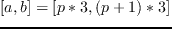
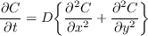
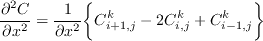
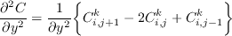
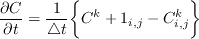

|  | (1) |
We will use the explicit finite difference method to solve this equation. The formulation is as follows:
Second order partial derivatives in the x and y direction:
|  | (2) |
|  | (3) |
Time derivative:
|  | (4) |
The partial differential equation in terms of finite difference formulas

Rearranging Eq.1.5

The explicit finite difference method requires small time steps in order to overcome the stability problem which makes it computationally expensive . However, this method is simple and easy to parallelize. The square domain is divided among two processes in Figure 1.3. Each process is responsible for one rectangular grid and the boundary elements are transferred to neighboring processes through message passing.Note that, in columnwise distribution, the boundary elements are contiguous in the memory and they can be transferred without using derived data types.
Now let us examine the program to see how to divide the domain among the processes; express the initial and boundary conditions in a parallel program; and also, generate output files.
PROGRAM DIFFUSION
include 'mpif.h'
c N,M: Number of grids in the x and y c directions c root:
Rank of the process to which array c elements with an initial
value of 5 are c mapped c FLD,WKSP:Concentration of the solute
c DF:Diffusivity c L:Length of one side of the square domain
integer N, M, root,NT
integer COUNT,I,J
double precision FLD, WKSP
double precision DELTA,DELTAT,DELTAX
double precision DELTAY,DELTA1,DELTA2
double precision DF,L,T
c Variables used for opening output files
character*12 hostname
integer status, hostnm
character*32 filename
c Variables used for timing
double precision FUNCTION DSECNDS
double precision XL, Y1,Y2
c Control parameter
logical done
dimension FLD(2401,2401),WKSP(2401,2401)
integer ISTATUS(MPI_STATUS_SIZE)
c Start the timer
XL=0.0
Y1=DSECNDS(XL)
CALL MPI_INIT(IERR)
c Initializing the parameters
N=2401
M=2401
T=10.0d0
NT=100
DELTAT=T/NT
L=100.0d0
DELTAX=L/(N-1)
DELTAY=L/(M-1)
DELTA1=DELTAT/(DELTAX**2.0d0)
DELTA2=DELTAT/(DELTAY**2.0d0)
DF=(10.0d0**(-4.0d0))*25.0d0
DONE=.FALSE.
CALL MPI_COMM_SIZE(MPI_COMM_WORLD,NPROCS,
& IERR)
CALL MPI_COMM_RANK(MPI_COMM_WORLD,MYRANK,
& IERR)
c The subroutine RANGE distributes the array c onto the
processes. c JSTA and JEND stand for the first and the c last
column mapped to each process.
CALL RANGE (1,M,NPROCS,MYRANK,JSTA,JEND)
ROOT=(NPROCS-1)/2
JSTA2=JSTA
JEND1=JEND
IF (MYRANK.EQ.0) JSTA2=2
IF (MYRANK.EQ.(NPROCS-1)) JEND1=M-1
INEXT=MYRANK+1
IPREV=MYRANK-1
IF (MYRANK.EQ.(NPROCS-1))INEXT=MPI_PROC_NULL
IF(MYRANK.EQ.0) IPREV=MPI_PROC_NULL
c Initial Conditions
DO J=JSTA2,JEND1
DO I=2,N-1
FLD(I,J)=2.0d0
ENDDO
ENDDO
IF (MYRANK.EQ.ROOT) THEN
DO J= 1190,1200
DO I=1190,1200
FLD(I,J)=5.0d0
ENDDO
ENDDO
ENDIF
c Boundary Conditions
DO J=JSTA,JEND
FLD(1,J)=1.0d0
FLD(N,J)=1.0d0
ENDDO
IF (MYRANK.EQ.0) THEN
DO I=1,N
FLD(I,JSTA)=1.0d0
ENDDO
ENDIF
IF (MYRANK.EQ.(NPROCS-1)) THEN
DO I=1,N
FLD(I,JEND)=1.0d0
ENDDO
ENDIF
c Main Loop
DO COUNT=1,500
c Transfer the boundary elements to c neigboring processes
CALL MPI_ISEND(FLD(1,JEND),N,MPI_DOUBLE_
& PRECISION, inext,1,MPI_COMM_WORLD,ISEND1,IERR)
CALL MPI_ISEND(FLD(1,JSTA),N,MPI_DOUBLE_
& PRECISION,iprev,1,MPI_COMM_WORLD,ISEND2,IERR)
CALL MPI_IRECV(FLD(1,JSTA-1),N,MPI_DOUBLE_
& PRECISION,iprev,1,MPI_COMM_WORLD,IRECV1,IERR)
CALL MPI_IRECV(FLD(1,JEND+1),N,MPI_DOUBLE_
& PRECISION,inext,1,MPI_COMM_WORLD,IRECV2,IERR)
CALL MPI_WAIT(ISEND1,ISTATUS,IERR)
CALL MPI_WAIT(ISEND2,ISTATUS,IERR)
CALL MPI_WAIT(IRECV1,ISTATUS,IERR)
CALL MPI_WAIT(IRECV2,ISTATUS,IERR)
c Updates the concentration using the finite c difference
formula
DO J=JSTA2,JEND1
DO I=2,N-1
WKSP(I,J)=FLD(I,J)+DELTA1*DF*(FLD(I+1,J)
& -2.0*FLD(I,J)+FLD(I-1,J))
& +DELTA2*DF*(FLD(I,J+1)-2.0*FLD(I,J)+FLD(I,J-1))
ENDDO
ENDDO
DO J=JSTA2,JEND1
DO I=2,N-1
FLD(I,J)=WKSP(I,J)
ENDDO
ENDDO
c Check whether the concentration in the middle c of the small
square is below 2.5. If so, change c the control parameter
"done" to true
IF (MYRANK.EQ.ROOT) THEN
WRITE(*,*) FLD(1195,1195), 'mdfld'
IF (FLD(1195,1195).le.2.5) THEN
WRITE(*,*) fld(1195,1195), 'mdfld'
DONE=.TRUE.
WRITE (*,*) done , myrank, 'done'
ENDIF
ENDIF
c Collective Communication ("done" is transferred c from root
to all processes)
CALL MPI_BCAST(done,1,MPI_LOGICAL,root,
& MPI_COMM_WORLD,ierr)
IF (DONE) GO TO 100
ENDDO
c Prints the number of iterations necessary for c the
concentration go down to 2.5 100 WRITE(*,*) count, myrank, 'count'
c Opens a file for each process for I/O as c "mpi.hostname"
STATUS=HOSTNM(HOSTNAME)
WRITE(*,*) HOSTNAME,MYRANK
FILENAME='mpi.' // hostname
OPEN(unit=myrank,file=filename,
& status='unknown')
DO J=JSTA,JEND
DO I=1,N
WRITE(myrank,*) fld(i,j)
ENDDO
ENDDO
c Terminates the parallel execution
CALL MPI_FINALIZE(IERR)
c Prints the elapsed time.
Y2=DSECNDS(XL)
Y2=Y2-Y1
WRITE(*,*) Y2, 'seconds'
END
SUBROUTINE RANGE (n1,n2,nprocs,irank,ista,iend)
c Number of columns that will be mapped to c each process
iwork1=(n2-n1+1)/nprocs
c Determines the offset
iwork2=MOD(n2-n1+1,nprocs)
c Distributes the extra columns to the processes c If mod()is
2 for example, an extra column will c be mapped to process 0 and
process 1
ista=irank*iwork1+n1+MIN(irank,iwork2)
iend=ista+iwork1-1
if(iwork2.gt.irank) iend=iend+1
return
end
The following figures show the initial and final states of the system.